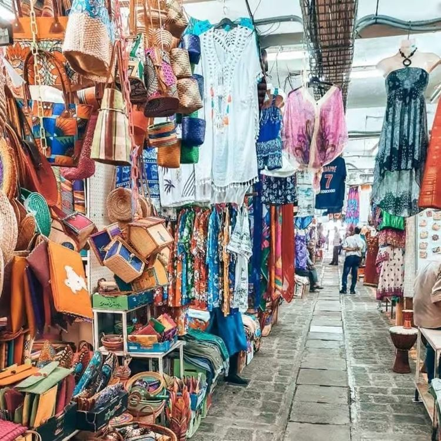
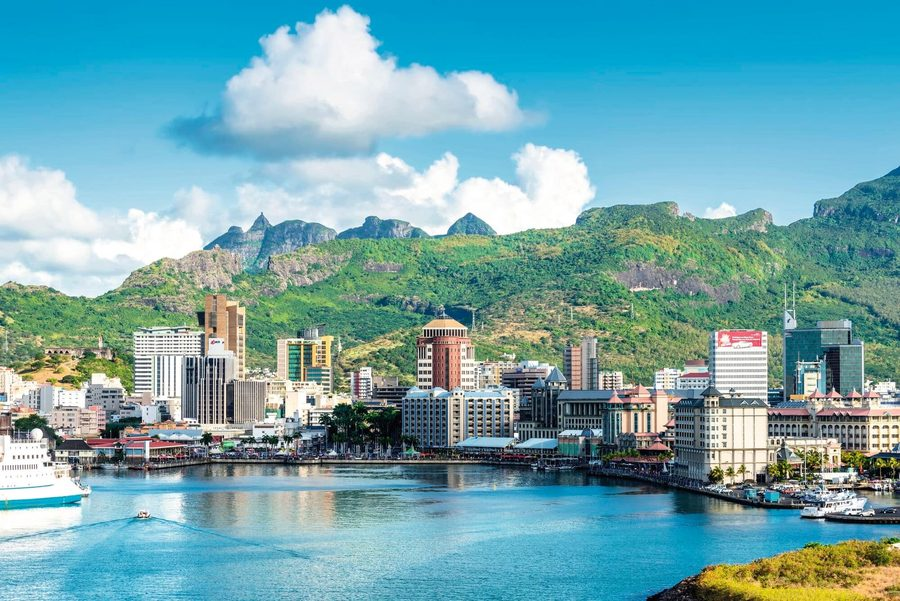
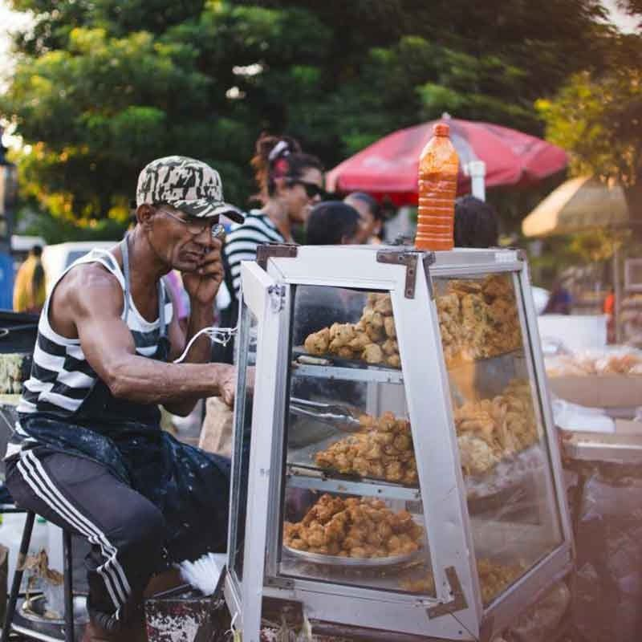
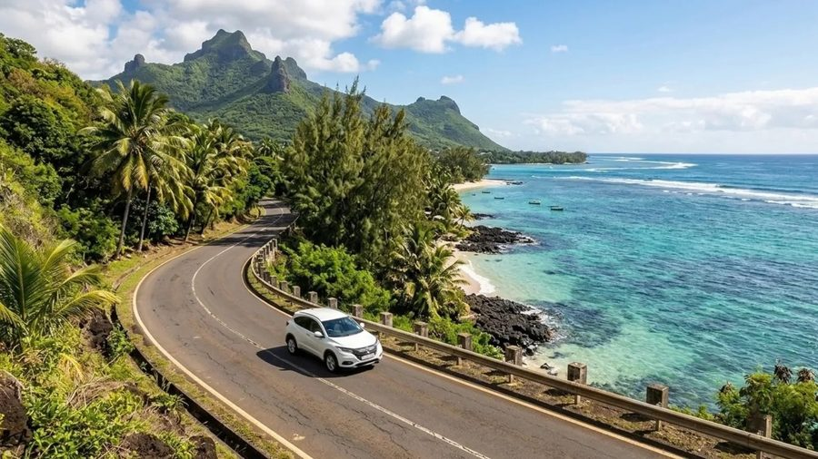
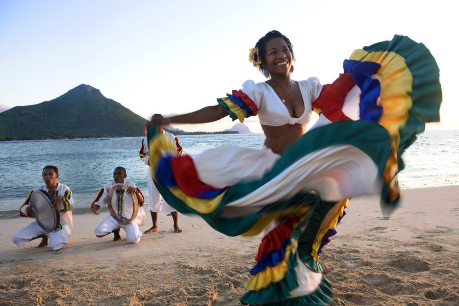
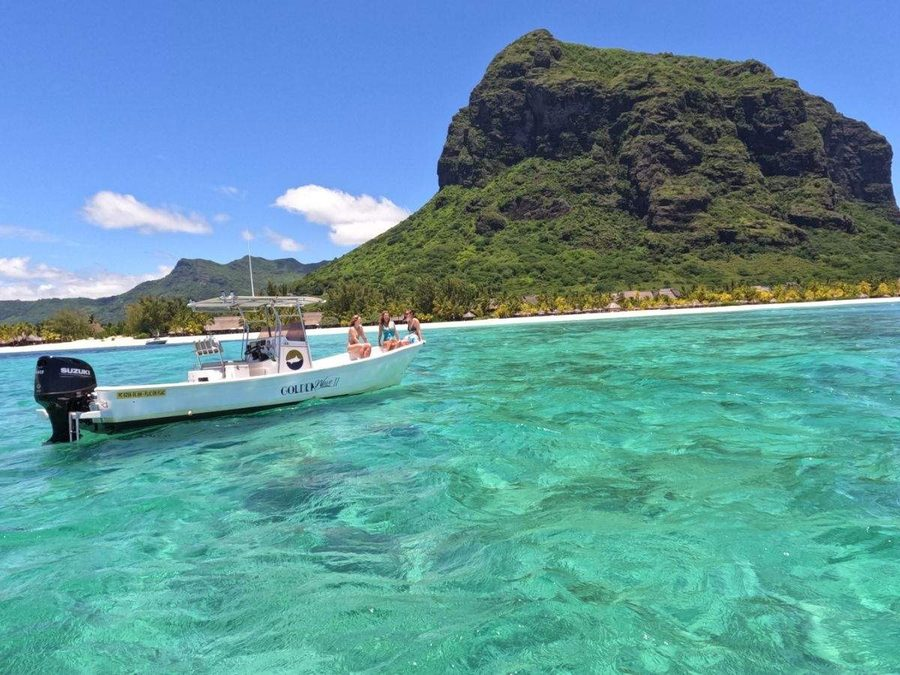
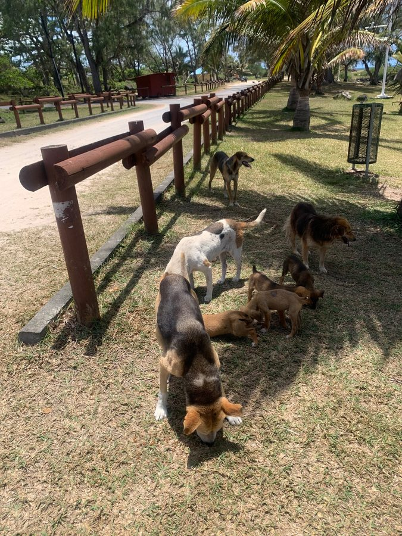

GOOD TO KNOW
Before you land
Mauritius is a safe, friendly and very touristy island, so you really don’t need to worry. Here’s what we’d tell any friend visiting for the first time.
What can I wear?
Whatever you’re comfortable in: it’s a beach island! Just keep swimwear for the beach, and cover your shoulders and knees at temples and religious sites like Ganga Talao (you’ll take your shoes off there too). For the celebrations, see our What to Wear page.

2027
Is it safe?
Very. Mauritius is a safe country and very used to tourists, so there’s nothing to worry about. Petty theft can happen, so keep an eye on bags and phones as you would anywhere.

2027
Can I eat and drink everything?
Street food is safe and delicious, so dig in. Don’t drink the tap water unless it’s boiled, but it’s fine for brushing your teeth. Bottled water is cheap and everywhere.

2027
How do I get around?
Walking isn’t easy, as many roads have no pavements. Taxis are everywhere (agree the fare before you get in), and there’s Uber too. For day trips, a driver for the day is easiest. Cars drive on the left.

2027
Will people speak English?
Yes! We speak Creole and French, but almost everyone understands and speaks English. The island is very multicultural and used to visitors.

2027
What about healthcare?
Public hospitals treat emergencies and are free for Mauritians, but visitors can be charged, so please bring travel insurance.
2027
Is the sea safe?
The lagoons are calm and protected by the reef, so swimming is lovely. Watch out for sea urchins and stonefish on rocks and coral, so water shoes help. For boat trips, choose boats with a registration number starting with “PC”.

2027
What’s with all the dogs?
You’ll see lots of stray dogs. They’re used to people and don’t bite, but please don’t pet or feed them.

2027
HANDY EXTRAS
The little things
Police 999 or 112 · Ambulance 114 · Fire 995 or 115
UK three-pin and European two-pin, 230V.
Rupees (Rs). Cards widely accepted, cash for street food.
Strong even in June. Pack sunscreen.
Bring repellent for evenings.
GMT+4: 3 hours ahead of the UK.